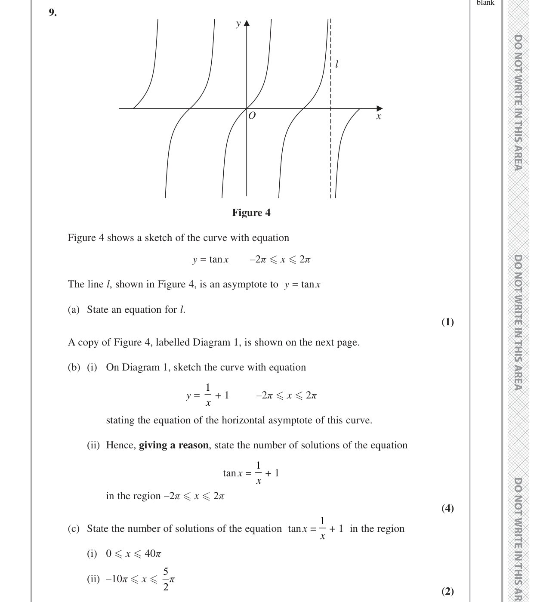

PMT 30 9. l x y O Figure 4 Figure 4 shows a sketch of the curve with equation y = tan x –2π x 2π The line l, shown in Figure 4, is an asymptote to y = tan x (a) State an equation for l. (1) A copy of Figure 4, labelled Diagram 1, is shown on the next page. (b) (i) On Diagram 1, sketch the curve with equation y = 1 x + 1 –2π x 2π stating the equation of the horizontal asymptote of this curve. (ii) Hence, giving a reason, state the number of solutions of the equation tan x = 1 x + 1 in the region –2π x 2π (4) (c) State the number of solutions of the equation tan x = 1 x + 1 in the region (i) 0 x 40π (ii) –10π x 5 2π (2) PMT 31 l x y O Diagram 1 PMT 32 TOTAL FOR PAPER IS 75 MARKS END
Thought Process: We are given the graph of $y = \tan x$. The line $l$ is an asymptote. We need to recall the asymptotes of the tangent function. The general form of vertical asymptotes for $y = \tan x$ is $x = \frac{(2n+1)\pi}{2}$, where $n$ is an integer. From Figure 4, the asymptote $l$ is shown to the right of $x=\pi$ and to the left of $x=2\pi$. The next positive asymptote after $x=\pi/2$ is $x=3\pi/2$.
Working:
The asymptotes of $y = \tan x$ occur where $\cos x = 0$.
These are at $x = \dots, -\frac{3\pi}{2}, -\frac{\pi}{2}, \frac{\pi}{2}, \frac{3\pi}{2}, \frac{5\pi}{2}, \dots$
Figure 4 shows the asymptote $l$ for $x > 0$. The first positive asymptote is $x=\pi/2$. The next is $x=3\pi/2$. The sketch clearly depicts $l$ as the asymptote $x=3\pi/2$.
Thought Process: We need to sketch a reciprocal graph. We recognise $y = \frac{1}{x+1}$ as a transformation of the basic reciprocal graph $y = \frac{1}{x}$. The transformation is a horizontal translation of 1 unit to the left. This means the vertical asymptote shifts from $x=0$ to $x=-1$. The horizontal asymptote of $y=\frac{1}{x}$ is $y=0$, and this remains unchanged for $y=\frac{1}{x+1}$. We need to sketch both branches of the curve in the given range $[-2\pi, 2\pi]$ and label the horizontal asymptote.
Working:
The curve $y = \frac{1}{x+1}$ has:
To sketch, consider:
(Sketch description, as no diagrams allowed): The sketch should show the vertical asymptote at $x=-1$ and the horizontal asymptote at $y=0$. For $x > -1$, there is a curve in the first quadrant (relative to the new origin at $(-1,0)$) starting from high $y$ values near $x=-1$ and decreasing towards $y=0$. For $x < -1$, there is a curve in the third quadrant (relative to the new origin) starting from low $y$ values near $x=-1$ and increasing towards $y=0$. Both curves should be within the $x$-range of $[-2\pi, 2\pi]$.
Answer (Horizontal Asymptote): $y = 0$
Thought Process: The number of solutions to the equation $\tan x = \frac{1}{x+1}$ is given by the number of points of intersection between the graphs of $y = \tan x$ and $y = \frac{1}{x+1}$. We need to carefully count these intersections within the range $[-2\pi, 2\pi]$ by analysing the signs of the functions and their behaviour near asymptotes.
First, list the vertical asymptotes of $y = \tan x$ in the given range: $x = -\frac{3\pi}{2} \approx -4.71$, $x = -\frac{\pi}{2} \approx -1.57$, $x = \frac{\pi}{2} \approx 1.57$, $x = \frac{3\pi}{2} \approx 4.71$. The vertical asymptote for $y = \frac{1}{x+1}$ is $x = -1$.
We analyse the intersections based on whether $y = \frac{1}{x+1}$ is positive ($x > -1$) or negative ($x < -1$).
Case 1: $x < -1$ (where $y = \frac{1}{x+1}$ is negative)
We need $y = \tan x$ to also be negative for an intersection.
Case 2: $x > -1$ (where $y = \frac{1}{x+1}$ is positive)
We need $y = \tan x$ to also be positive for an intersection.
Working (Summary of solutions in $[-2\pi, 2\pi]$):
Adding up the solutions from all cases:
$1 ([-2\pi, -3\pi/2)) + 1 ((-3\pi/2, -\pi)) + 1 ((-π/2, -1)) + 1 ((0, \pi/2)) + 1 ((\pi, 3\pi/2)) = 5$ solutions.
Thought Process: We use the periodicity of $\tan x$ (period $\pi$) and the behaviour of $y = \frac{1}{x+1}$ (which is always decreasing and approaches $y=0$ as $|x|$ increases). The solutions typically occur in pairs within each $2\pi$ cycle for positive $x$, and follow a pattern for negative $x$.
(i) $0 \le x \le 40\pi$
In the interval $(0, 2\pi]$, there are 2 solutions (from part b(ii): one in $(0, \pi/2)$ and one in $(\pi, 3\pi/2)$). These solutions occur in the regions where $\tan x$ is positive (i.e., $(k\pi, k\pi + \pi/2)$), because $y = \frac{1}{x+1}$ is always positive for $x \ge 0$.
The range $0 \le x \le 40\pi$ spans $40\pi / (2\pi) = 20$ cycles of $2\pi$. Each $2\pi$ cycle contributes 2 solutions. So, $20 \times 2 = 40$ solutions.
(ii) $-10\pi \le x \le 5\pi/2$
First, count solutions for $x > 0$ within $(0, 5\pi/2]$:
Next, count solutions for $x < 0$ within $[-10\pi, 0)$. These are the solutions where both $\tan x$ and $y=\frac{1}{x+1}$ are negative, which means $x < -1$. The solutions are of the type counted in part (b)(ii) for $x < -1$: one in $(-π/2, -1)$, one in $(-3π/2, -π)$, one in $[-2π, -3π/2)$.
This means for every interval of length $\pi$ (roughly, from one asymptote to the next or from a zero to an asymptote), there's either 1 solution (where signs match) or 0 solutions (where signs differ).
Let's list the relevant intervals for $x < -1$ where $\tan x$ is negative (and $y=\frac{1}{x+1}$ is also negative):
We need to find how many such 'negative $\tan x$ branches' exist within $[-10\pi, -1)$ that lead to a solution. These are intervals of the form $((2k-1)\pi/2, k\pi)$ (where $\tan x$ is negative) that are also below $-1$.
From $x = -1$ down to $x = -10\pi$:
There's a solution in each interval of the form $((2n+1)\pi/2, (n+1)\pi)$ (where $\tan x$ is negative) where the interval lies entirely to the left of $x=-1$.
This gives $1+10 = 11$ solutions for $x < 0$ in the range (from $x = -1$ down to $-10\pi$).
Total solutions = (solutions for $x > 0$) + (solutions for $x < 0$) = $3 + 11 = 14$ solutions.